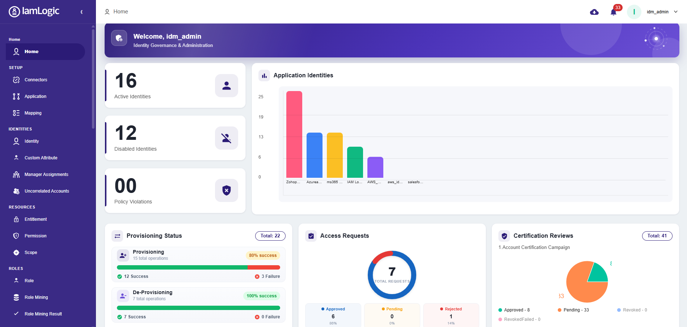

IamLogic IGA
Identity Governance & Administration
Automate identity lifecycle, access reviews, role governance, SoD controls and provisioning with audit evidence generated as work happens.

The problem
Identity Governance Gaps Across the Enterprise
Over-provisioned access, orphan accounts and manual reviews create governance gaps. IGA automates lifecycle, access reviews and policy controls.
Identity Lifecycle Management
Automate access across the identity lifecycle.
Automate joiner, mover and leaver workflows with role-based provisioning, access changes and immediate deprovisioning across connected systems.
- Auto-create accounts, assign access and notify on joining
- Simultaneous grant-and-revoke on transfers — no privilege accumulation
- Immediate, verifiable deprovisioning on exit
Access Certification
Turn access certifications into audit-ready evidence.
Run scheduled certification campaigns by application, department, role or risk. Record decisions, automate revocations and retain sign-off evidence.
- Campaign templates for quarterly and half-yearly cadences
- Usage context that kills rubber-stamping
- Revocations that actually deprovision, with timestamps
Role Management & Role Mining
Build and manage roles from real access patterns.
Discover access patterns, propose roles and manage their lifecycle. RBAC simplifies provisioning and access reviews.
- Pattern discovery across existing entitlements
- Role lifecycle: propose, approve, assign, retire
- RBAC that streamlines provisioning and reviews alike
Segregation of Duties
Prevent conflicting access before it is provisioned.
Define SoD rules, prevent conflicting assignments at request time, detect existing conflicts and document approved exceptions.
- Preventive checks at request and provisioning time
- Detective scans across existing access
- Exception workflow with documented risk acceptance
Access Requests & Approvals
Structured access requests and approvals.
Provide a self-service access catalog with configurable approvals, SLA tracking, justification and a complete request-to-grant audit trail.
- Self-service catalog with business-friendly names
- Multi-level approval workflows with delegation
- Full request-to-grant audit trail
Provisioning & Connector Framework
Govern provisioning across API and non-API applications.
Use the Python connector framework for custom integrations and ticketing workflows for applications without APIs, with IGA verifying completion.
- Python connector framework: build and maintain custom connectors
- Ticketing-workflow provisioning for non-API applications
- Connector development available as a service
Compliance Reporting & Analytics
Turn governance data into audit-ready reports.
Generate certification, SoD, deprovisioning, orphan-account and access reports on demand, with traceable evidence for governance and audits.
- Evidence packs aligned to DPDP, RBI, SEBI CSCRF, IRDAI, ISO 27001
- Orphan and dormant account analytics
- Everything logged for traceability
Governance for Indian Regulation
Identity Governance Across 5 Frameworks
Map identity lifecycle, access certification, SoD and access controls to DPDP, RBI, SEBI, IRDAI and ISO 27001 requirements.
FAQ
Identity Governance FAQs
What drives identity lifecycle events?
Authoritative sources can include HRMS platforms, databases, files or APIs through the Python connector framework. External populations can use their own systems of record.
How do you provision apps without APIs?
For applications without APIs, IGA can use ticketing workflows such as ServiceNow or Jira, with completion documented and governed.
Can IGA work independently of Access Manager?
Yes. IGA can operate independently. When used with Access Manager, authentication signals can enrich governance decisions and governance outcomes can inform access enforcement.
Does IGA support on-premises deployment?
Yes. IGA supports on-premises, private cloud and hybrid deployment, with high availability and disaster recovery.
How long does IGA deployment take?
Initial rollout can be completed in weeks; full coverage depends on application count, integrations and onboarding requirements.
See an IGA Certification Campaign End to End
See an IGA certification campaign from scoping to review, revocation and audit evidence.